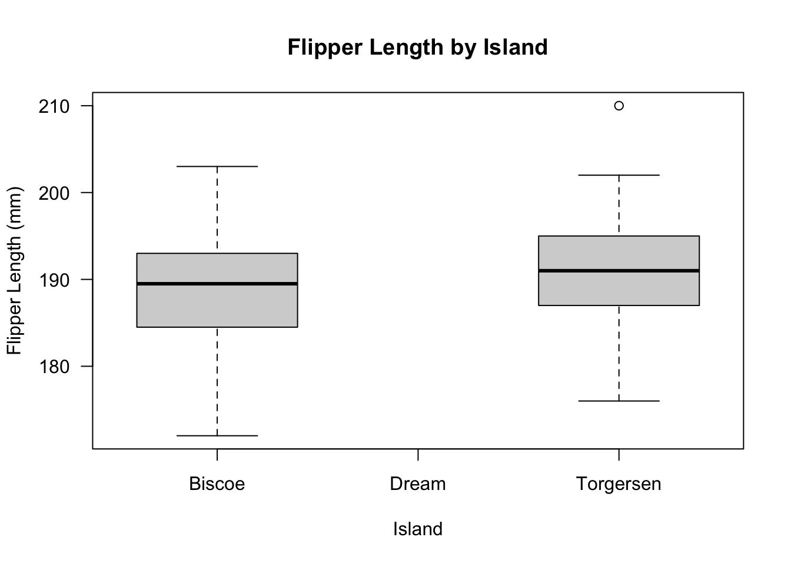
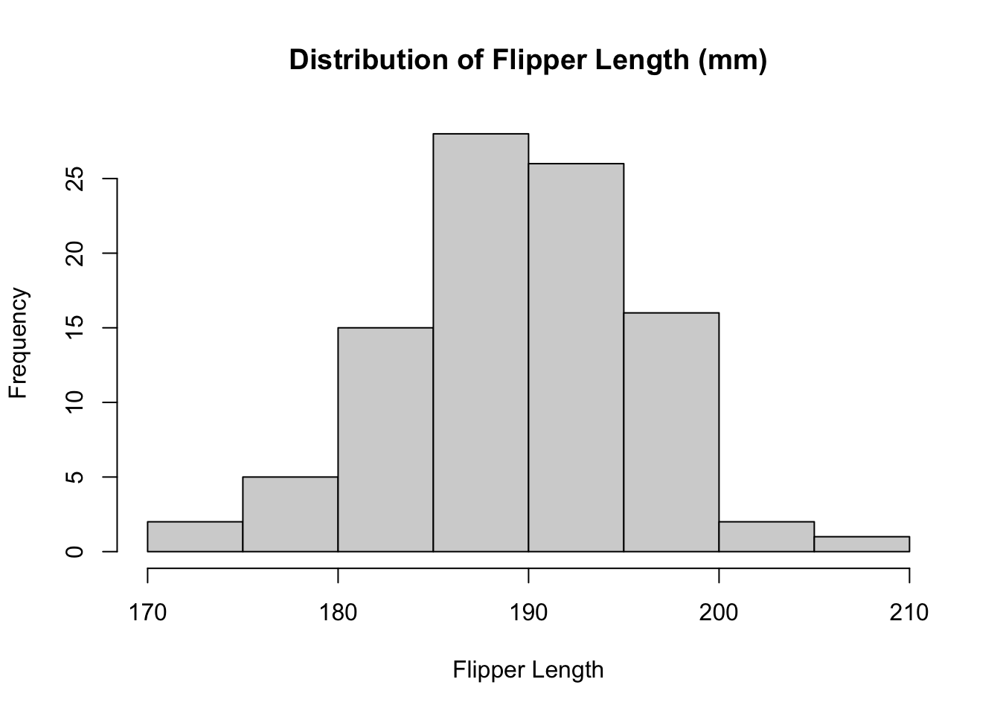
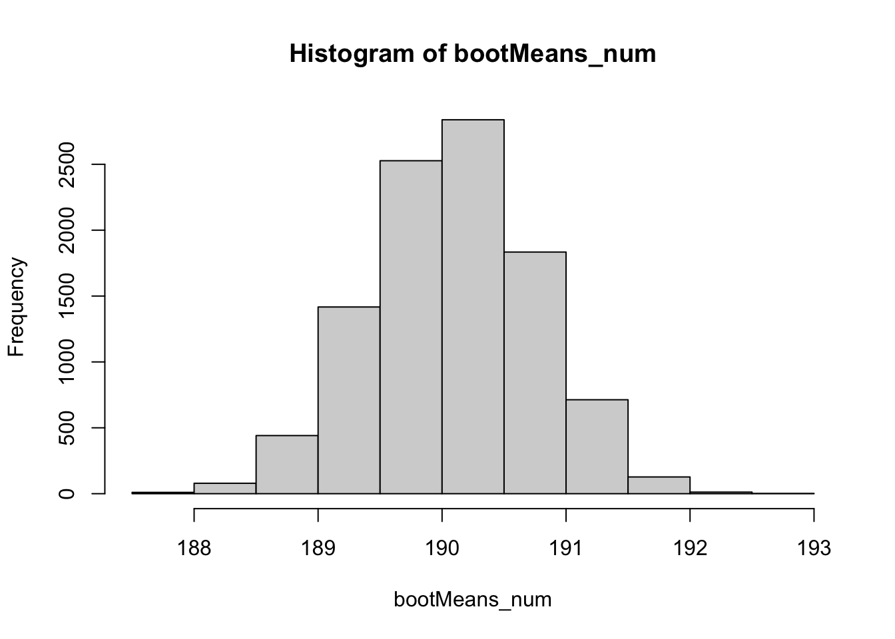
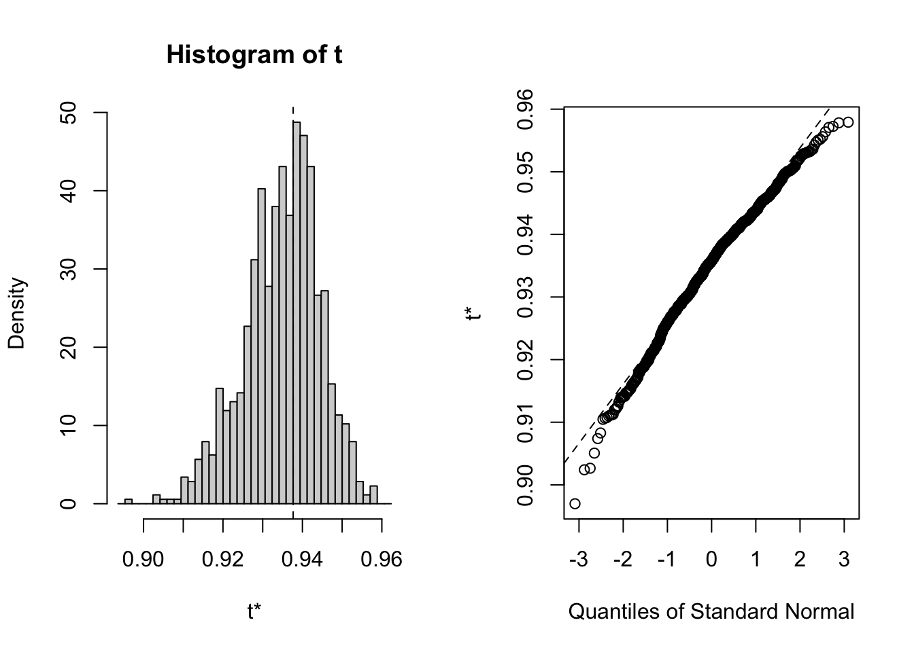

library(tidyverse)
library(palmerpenguins)
library(boot)19 Bootstrap Tests
19.1 Introduction to Bootstrapping
Bootstrapping, introduced by Brad Efron in 1979, is founded on a straightforward concept: when our data is a sample from a larger population, why not generate additional samples by resampling from our existing data? However, since we lack access to new data, we resort to repeatedly sampling from our dataset with replacement.
The primary objective of bootstrapping is to augment the sample size for analysis, particularly in scenarios where the provided sample size is limited.
19.2 Mathematical definition
Bootstrapping involves randomly selecting n observations from a sample with replacement to create a bootstrap sample. The process of sampling with replacement allows each observation in the original dataset to be selected multiple times or not at all in the bootstrap sample.
Once a bootstrap sample is obtained, the statistic of interest (e.g., mean, median, standard deviation) is calculated from this sample. This process is repeated multiple times to generate a distribution of the statistic under the assumption that the original dataset is representative of the population.
Bootstrapping can be used to construct confidence intervals for a population parameter (e.g., mean, median) by calculating the desired quantiles (e.g., percentiles) of the bootstrap distribution of the statistic.
19.3 penguins Data
The penguins dataset contains measurements collected in the Palmer Archipelago of Antarctica, made available by Dr. Kristen Gorman and the Palmer Station Long Term Ecological Research (LTER) Program. This dataset, included in the palmerpenguins package, comprises observations on various attributes of penguins, including species, island of origin, physical measurements (such as flipper length, body mass, and bill dimensions), sex, and year of observation. In total, the dataset consists of 344 rows and 8 variables.
In this tests we are going to obtain the 95% confidence interval for flipper length of the Adelie penguin from two different Islands.
19.4 Cleaning the data
The island of Dream penguin population was excluded because their population size was much larger compared to Torgersen and Biscoe populations.
19.5 Assumptions of Bootstrap
- The dataset is a random sample drawn representative of the population of interest.
- Resampling with replacement accurately simulates the sampling process.
- Observations in the dataset are independent and identically distributed
19.6 Checking Distribution
Code
# check the boxplot of the data
boxplot(
new_penguins_df$flipper_length_mm ~ new_penguins_df$island, las = 1,
ylab = "Flipper Length (mm)",
xlab = "Island",
main = "Flipper Length by Island"
)
Code
# check the histogram of the data
hist(
x = new_penguins_df$flipper_length_mm,
main = "Distribution of Flipper Length (mm)",
xlab = "Flipper Length"
)
19.7 Code to run Bootstrap
Code
[1] 184 192 198 195 195 176 188 183 184 193 199 198 184 190 198 195 195 199 193
[20] 197 198 189 197 188 189 199 200 190 183 198 194 190 191 196 189 195 198 197
[39] 191 184 198 180 195 186 193 193 191 195 190 198 189 181 197 196 182 200 188
[58] 184 202 189 197 186 181 195 181 191 185 193 196 185 192 199 186 196 180 190
[77] 190 195 197 193 191 181 195 190 186 189 192 187 190 195 195 182 172 194 181Code
[[1]]
[1] 183 190 189 188 181 198 181 172 187 189 189 193 180 197 191 190 196 191 195
[20] 181 193 190 190 186 188 195 190 197 198 190 180 198 194 188 195 191 203 199
[39] 190 189 195 186 189 199 202 197 189 190 194 190 181 190 190 181 186 196 174
[58] 185 174 202 191 184 181 184 193 190 190 190 191 196 189 195 195 198 193 190
[77] 197 184 186 188 193 190 191 195 198 180 191 185 189 192 183 192 199 186 195
[[2]]
[1] 187 194 187 189 184 188 187 187 184 197 193 191 187 189 190 172 187 186 180
[20] 193 191 195 195 180 184 189 197 191 187 186 186 187 184 188 190 193 198 190
[39] 195 198 184 197 195 195 195 198 194 191 198 197 198 186 194 195 189 186 181
[58] 180 191 180 191 193 196 191 202 191 187 181 199 172 181 191 195 195 194 198
[77] 191 191 190 192 190 199 195 193 195 197 188 181 190 185 186 191 174 193 195
[[3]]
[1] 191 196 203 195 185 195 193 186 186 202 186 203 187 180 185 186 192 202 186
[20] 192 200 195 184 185 195 193 199 190 189 185 181 181 188 197 181 190 188 185
[39] 187 184 184 195 199 186 200 186 192 195 190 182 189 191 203 193 195 191 191
[58] 199 195 198 187 191 195 190 190 187 189 192 186 199 193 190 187 181 190 191
[77] 190 190 183 193 190 197 181 190 187 198 187 190 200 184 190 184 186 191 193Code

2.5% 97.5%
188.7682 191.3684 19.7.1 Code for spearman correlation
Code
# Custom function to find correlation between the bill length and depth
corr.fun <- function(data, idx) {
# vector of indices that the boot function uses
df <- data[idx, ]
# Find the spearman correlation between
# the 3rd (length) and 4th (depth) columns of dataset
cor(df[, 3], df[, 4], method = 'spearman')
}
# Setting the seed for reproducability of results
set.seed(42)
# Calling the boot function with the dataset
bootstrap <- boot(iris, corr.fun, R = 1000)
# Display the result of boot function
bootstrap
ORDINARY NONPARAMETRIC BOOTSTRAP
Call:
boot(data = iris, statistic = corr.fun, R = 1000)
Bootstrap Statistics :
original bias std. error
t1* 0.9376668 -0.002717295 0.009436212Code
# Plot the bootstrap sampling distribution using ggplot
plot(bootstrap)
Code
# Function to find the bootstrap CI
boot.ci(
boot.out = bootstrap,
type = "perc"
)BOOTSTRAP CONFIDENCE INTERVAL CALCULATIONS
Based on 1000 bootstrap replicates
CALL :
boot.ci(boot.out = bootstrap, type = "perc")
Intervals :
Level Percentile
95% ( 0.9142, 0.9519 )
Calculations and Intervals on Original ScaleThis code utilizes bootstrapping to estimate the sampling distribution and confidence interval of the Spearman correlation coefficient between bill length and depth in the iris dataset. The boot() function generates bootstrap samples, while the boot.ci() function calculates the bootstrap confidence interval. Visualizations are provided to aid in understanding the sampling distribution.
19.8 Conclusion
In conclusion, bootstrap testing emerges as a valuable tool, particularly when confronted with small sample sizes. By leveraging resampling techniques, it offers a robust method to estimate parameters, assess uncertainty, and make reliable inferences about population statistics.